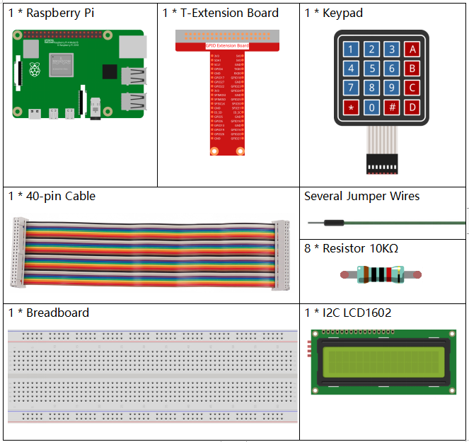
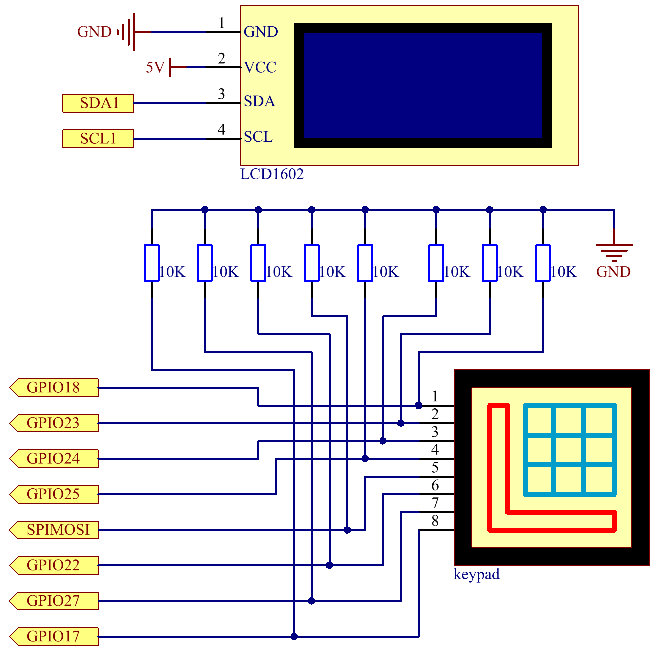

注釈
こんにちは、SunFounderのRaspberry Pi & Arduino & ESP32愛好家コミュニティへようこそ！Facebook上でRaspberry Pi、Arduino、ESP32についてもっと深く掘り下げ、他の愛好家と交流しましょう。
参加する理由は？
エキスパートサポート：コミュニティやチームの助けを借りて、販売後の問題や技術的な課題を解決します。
学び＆共有：ヒントやチュートリアルを交換してスキルを向上させましょう。
独占的なプレビュー：新製品の発表や先行プレビューに早期アクセスしましょう。
特別割引：最新製品の独占割引をお楽しみください。
祭りのプロモーションとギフト：ギフトや祝日のプロモーションに参加しましょう。
👉 私たちと一緒に探索し、創造する準備はできていますか？[ここ]をクリックして今すぐ参加しましょう！
3.1.12 ゲーム – 数当て
はじめに
数当ては、あなたと友達が交互に数字（0〜99）を入力する楽しいパーティーゲームです。数字の入力に従って、範囲は狭まっていき、プレイヤーが謎を正しく解答するまで続きます。その後、プレイヤーは負けて罰せられます。たとえば、幸運の数字が51で、プレイヤー1が50を入力した場合、数字の範囲は50〜99に変わります。プレイヤー2が70を入力すると、数字の範囲は50〜70になります。プレイヤー3が51を入力した場合、そのプレイヤーは不運です。ここでは、キーパッドを使用して数字を入力し、LCDを使用して結果を表示します。
必要なコンポーネント
このプロジェクトでは、以下のコンポーネントが必要です。
{kind=link}
回路図
実験手順
ステップ 1: 回路を組み立てます。

ステップ 2: I2Cをセットアップします（詳細は I2C設定 を参照）。
ステップ 3: ディレクトリを変更します。
cd ~/davinci-kit-for-raspberry-pi/python-pi5
ステップ 4: 実行します。
sudo python3 3.1.12_GAME_GuessNumber.py
プログラムが実行されると、LCDに初期ページが表示されます：
ようこそ！
Aボタンを押して開始！
'A'ボタンを押すと、ゲームが開始し、LCDにゲームページが表示されます。
数字を入力してください：
0 ‹point‹ 99
ランダムな数字 '‹point‹' がゲーム開始時に生成されますが、LCDには表示されません。必要なことは、それを推測することです。入力した数値は、最終的な計算が終了するまで、最初の行の末尾に表示されます（比較を開始するには 'D' を押し、入力された数値が 10 より大きい場合、自動的な比較が開始されます）。
'‹point‹' の数値範囲が2行目に表示されます。指定された範囲内で数値を入力する必要があります。数値を入力すると、範囲が狭まり、幸運か不運かにかかわらず、「当たりました！」と表示されます。
注釈
エラー「
FileNotFoundError: [Errno 2] No such file or directory: '/dev/i2c-1'」が表示される場合、I2Cを有効にするには I2C設定 を参照してください。エラー「
ModuleNotFoundError: No module named 'smbus2'」が表示される場合、「sudo pip3 install smbus2」を実行してください。エラー「
OSError: [Errno 121] Remote I/O error」が表示される場合、モジュールの接続が誤っているか、モジュールが壊れている可能性があります。コードと配線が正常であるにもかかわらず、LCDにコンテンツが表示されない場合は、背面のポテンショメーターを回してコントラストを上げることができます。
コード
注釈
以下のコードを 修正/リセット/コピー/実行/停止 することができます。ただし、その前に「davinci-kit-for-raspberry-pi/python-pi5」のようなソースコードのパスに移動する必要があります。コードを変更した後、効果を確認するために直接実行できます。
#!/usr/bin/env python3
from gpiozero import DigitalOutputDevice, Button
from time import sleep
import LCD1602
import random
class Keypad:
def __init__(self, rows_pins, cols_pins, keys):
"""
キーパッドを指定した行と列のピン、キーレイアウトで初期化します。
:param rows_pins: 行のGPIOピンのリスト。
:param cols_pins: 列のGPIOピンのリスト。
:param keys: キーパッド上のキーの配置。
"""
self.rows = [DigitalOutputDevice(pin) for pin in rows_pins] # 行のピンをセットアップ
self.cols = [Button(pin, pull_up=False) for pin in cols_pins] # 列のピンをセットアップ
self.keys = keys # キーパッドのレイアウトを定義
def read(self):
"""
現在押されているキーを読み取り、返します。
:return: 押されたキーのリスト。
"""
pressed_keys = []
for i, row in enumerate(self.rows):
row.on() # 現在の行をアクティブにする
for j, col in enumerate(self.cols):
if col.is_pressed:
index = i * len(self.cols) + j
pressed_keys.append(self.keys[index]) # 押されたキーを追加
row.off() # 行を非アクティブにする
return pressed_keys
# ゲームに関連する変数
count = 0
pointValue = 0
upper = 99
lower = 0
def setup():
"""
キーパッドとLCDディスプレイを初期化するセットアップ関数。
"""
global keypad, last_key_pressed, keys
rowsPins = [18, 23, 24, 25]
colsPins = [10, 22, 27, 17]
keys = ["1", "2", "3", "A",
"4", "5", "6", "B",
"7", "8", "9", "C",
"*", "0", "#", "D"]
keypad = Keypad(rowsPins, colsPins, keys)
last_key_pressed = []
LCD1602.init(0x27, 1) # LCDを初期化
LCD1602.clear()
LCD1602.write(0, 0, 'ようこそ!')
LCD1602.write(0, 1, 'Aを押して開始!')
def init_new_value():
"""
新しい目標値を初期化し、ゲームのパラメーターをリセットします。
"""
global pointValue, upper, lower, count
pointValue = random.randint(0, 99)
upper = 99
lower = 0
count = 0
print('目標値は %d です' % pointValue)
def detect_point():
"""
推測された数値が目標と一致するか、高すぎるか、低すぎるかをチェックします。
:return: 1（正しい推測）または0（それ以外）。
"""
global count, upper, lower
if count > pointValue and count < upper:
upper = count
elif count < pointValue and count > lower:
lower = count
elif count == pointValue:
count = 0
return 1
count = 0
return 0
def lcd_show_input(result):
"""
LCDに現在のゲームの状態と結果を表示します。
:param result: 最後の推測の結果（0または1）。
"""
LCD1602.clear()
if result == 1:
LCD1602.write(0, 1, '当たりました！')
sleep(5)
init_new_value()
lcd_show_input(0)
else:
LCD1602.write(0, 0, '数字を入力:')
LCD1602.write(13, 0, str(count))
LCD1602.write(0, 1, str(lower))
LCD1602.write(3, 1, ' < 目標 < ')
LCD1602.write(13, 1, str(upper))
def loop():
"""
キーパッドの入力を処理し、ゲームの状態を更新し、LCDに結果を表示するメインループ。
"""
global keypad, last_key_pressed, count
while True:
result = 0
pressed_keys = keypad.read()
if pressed_keys and pressed_keys != last_key_pressed:
if pressed_keys == ["A"]:
init_new_value()
lcd_show_input(0)
elif pressed_keys == ["D"]:
result = detect_point()
lcd_show_input(result)
elif pressed_keys[0] in keys:
if pressed_keys[0] in ["A", "B", "C", "D", "#", "*"]:
continue
count = count * 10 + int(pressed_keys[0])
if count >= 10:
result = detect_point()
lcd_show_input(result)
print(pressed_keys)
last_key_pressed = pressed_keys
sleep(0.1)
try:
setup()
loop()
except KeyboardInterrupt:
LCD1602.clear() # 割り込み時にLCDをクリア
コード説明
GPIO Zeroライブラリからデジタル出力デバイスとボタンのための重要なクラスをインポートするセクションです。スクリプト内で遅延を導入するために、timeモジュールのsleep関数も含まれています。LCD1602ライブラリは、テキストやデータ出力を表示するために役立つLCDディスプレイの操作に利用されます。さらに、ランダムな数字を生成するための関数を提供するrandomライブラリも組み込まれています。これはプロジェクトのさまざまな面で有利になる可能性があります。
#!/usr/bin/env python3 from gpiozero import DigitalOutputDevice, Button from time import sleep import LCD1602 import random
キーパッドのクラスを定義し、行と列のピンで初期化し、押されたキーを読み取るメソッドを定義します。
class Keypad: def __init__(self, rows_pins, cols_pins, keys): """ 指定された行と列のピン、およびキーレイアウトでキーパッドを初期化します。 :param rows_pins: 行のためのGPIOピンのリスト。 :param cols_pins: 列のためのGPIOピンのリスト。 :param keys: キーパッド上のキーのレイアウト。 """ self.rows = [DigitalOutputDevice(pin) for pin in rows_pins] # 行ピンの設定 self.cols = [Button(pin, pull_up=False) for pin in cols_pins] # 列ピンの設定 self.keys = keys # キーパッドのレイアウトを定義 def read(self): """ 現在押されているキーを読み取り、返します。 :return: 押されたキーのリスト。 """ pressed_keys = [] for i, row in enumerate(self.rows): row.on() # 現在の行をアクティブにする for j, col in enumerate(self.cols): if col.is_pressed: index = i * len(self.cols) + j pressed_keys.append(self.keys[index]) # 押されたキーを追加 row.off() # 行を非アクティブにする return pressed_keys
ゲームに関連する変数「count」をゼロとして初期化し、キーパッドとLCDディスプレイを設定し、ウェルカムメッセージと指示を表示します。ゲームでの特定のスコアや値を表す可能性がある「pointValue」変数をゼロに初期化します。当初は99に設定された「upper」は、数字当てゲームの最大値として使用される可能性があります。ゲームの最小境界として使用される可能性のあるゼロからの「lower」限界を設定します。
# ゲーム関連の変数 count = 0 pointValue = 0 upper = 99 lower = 0
キーパッドとLCDディスプレイを設定し、ウェルカムメッセージと指示を表示します。
def setup(): """ キーパッドとLCDディスプレイを初期化するためのセットアップ関数。 """ global keypad, last_key_pressed, keys rowsPins = [18, 23, 24, 25] colsPins = [10, 22, 27, 17] keys = ["1", "2", "3", "A", "4", "5", "6", "B", "7", "8", "9", "C", "*", "0", "#", "D"] keypad = Keypad(rowsPins, colsPins, keys) last_key_pressed = [] LCD1602.init(0x27, 1) # LCDの初期化 LCD1602.clear() LCD1602.write(0, 0, 'Welcome!') LCD1602.write(0, 1, 'Press A to Start!')
新しいターゲット値を初期化し、ゲームのパラメータをリセットします。
def init_new_value(): """ 新しいターゲット値を初期化し、ゲームのパラメータをリセットします。 """ global pointValue, upper, lower, count pointValue = random.randint(0, 99) upper = 99 lower = 0 count = 0 print('point is %d' % pointValue)
推測された数字がターゲットと一致するかどうかをチェックし、それに応じて推測範囲を更新します。
def detect_point(): """ 推測された数字がターゲットか、高すぎるか、低すぎるかをチェックします。 :return: 正しい推測の場合は1、それ以外の場合は0。 """ global count, upper, lower if count > pointValue and count < upper: upper = count elif count < pointValue and count > lower: lower = count elif count == pointValue: count = 0 return 1 count = 0 return 0
LCDにゲームの状態を表示し、現在の推測、範囲、結果を示します。
def lcd_show_input(result): """ LCDに現在のゲームの状態と結果を表示します。 :param result: 最後の推測の結果（0または1）。 """ LCD1602.clear() if result == 1: LCD1602.write(0, 1, 'You have got it!') sleep(5) init_new_value() lcd_show_input(0) else: LCD1602.write(0, 0, 'Enter number:') LCD1602.write(13, 0, str(count)) LCD1602.write(0, 1, str(lower)) LCD1602.write(3, 1, ' < Point < ') LCD1602.write(13, 1, str(upper))
キーパッド入力の処理、ゲームの状態の更新、LCDへの結果の表示を行うメインループです。
def loop(): """ キーパッド入力の処理とゲームの状態の更新を行うメインゲームループ。 """ global keypad, last_key_pressed, count while True: result = 0 pressed_keys = keypad.read() if pressed_keys and pressed_keys != last_key_pressed: if pressed_keys == ["A"]: init_new_value() lcd_show_input(0) elif pressed_keys == ["D"]: result = detect_point() lcd_show_input(result) elif pressed_keys[0] in keys: if pressed_keys[0] in ["A", "B", "C", "D", "#", "*"]: continue count = count * 10 + int(pressed_keys[0]) if count >= 10: result = detect_point() lcd_show_input(result) print(pressed_keys) last_key_pressed = pressed_keys sleep(0.1)
セットアップを実行し、メインゲームループに入ります。キーボード割り込みを使用してクリーンな終了が可能です。
try: setup() loop() except KeyboardInterrupt: LCD1602.clear() # 割り込み時にLCDをクリア